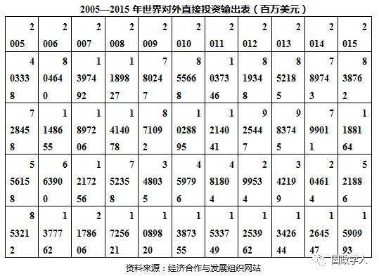
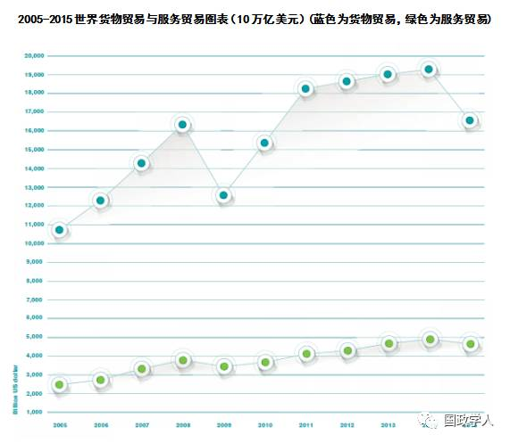
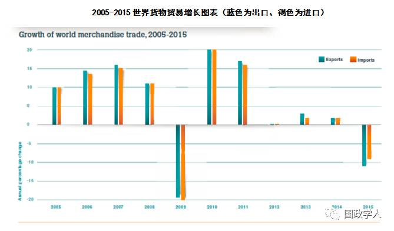
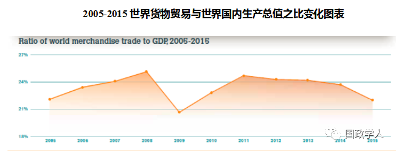

收录于合集

**
**
全球化退潮及民粹民族主义兴起

对现代世界体系的影响
作者简介： 叶江，现任上海国际问题研究院全球治理研究所研究员；兼任上海交通大学国际与公共事务学院教授、博士生导师。

摘要： 本文首先考辩全球化是否正在退潮，然后讨论民粹民族主义在美欧的兴起。在确认全球化正遭遇逆流且美欧民粹民族主义的兴起加剧了全球化退潮的基础上，进一步综合运用马克思主义、现实主义和新制度自由主义国际关系理论，探索和分析全球化退潮及美欧民粹民族主义兴起对现代世界体系稳定发展的负面影响。本文认为：构成现代世界体系的世界市场经济体系与国际政治体系都因全球化的退潮、民粹民族主义的兴起而面临巨大的挑战，大国间的权力斗争和称雄争霸将再度成为国际政治体系的主流，现代世界体系也因国际制度地位和作用的下降而动荡不宁，“安全困境”因此而更为难解，新的世界大战阴影似正在弥漫。
关键词： 全球化 民粹主义 民族主义 现代世界体系 世界大战

自2016年以来，有关全球化是否正在退潮的问题，以及与之相关的逆全球化的民粹民族主义问题已引起国际问题学术界和实务界的关注乃至争论。 本文试图在扼要介绍当前经济全球化所遇到问题的基础上，考察分析全球化是否正在退潮以及近年来欧美民粹民族主义对全球化的负面作用，并进一步综合运用马克思主义、现实主义与新自由制度主义国际关系理论探讨全球化退潮、欧美民粹民族主义的兴起对现代世界体系走向的影响，以期引起同行专家更为深入的研讨。
一、 全球化是否正经历退潮？
2016年9月英国《金融时报》发表该报副主编，首席经济评论员马丁·沃尔夫（Martin Wolf）的重要文章《全球化大潮正在转向》，该文主要从 贸易和资本流动 两个方面讨论经济全球化是否正面临退潮。文章指出：“这些领域的证据似乎非常清晰。 全球化已遭遇瓶颈，并且在某些领域发生了逆转。 ” 其 原因 在于：“华盛顿彼得森国际经济研究所(Peterson Institute for International Economics)的分析认为，自2008年以来世界贸易与产值的比例几乎没有发生变化，从而成为自第二次世界大战（以下简称二战）以来此类停滞持续时间最长的一段时期。据全球贸易预警组织(Global Trade Alert)表示，全球贸易规模甚至在2015年1月至2016年3月期间也出现了停滞，尽管全球经济继续增长。跨境金融资产存量与全球产值的比例在2007年达到57%的峰值，到2015年降至36%。最后，外商直接投资(FDI)流入与全球产值比例依然远低于2007年的3.3%，尽管该比例还在缓慢增长。”要之，根据沃尔夫的看法，“进一步经济一体化的动力停滞，甚至在某些方面还发生了逆转。全球化不再推动世界增长。如果全球化进程真的趋于结束、乃至发生逆转，这将不是自19世纪初工业革命以来的首次。”
然而，针对西方学者有关全球化正在退潮的论述， 我国的一些研究者则提出了不同的看法，认为：“在有识者眼中，世界正处于新旧全球化转换段，与其说全球化退潮，毋宁说新一轮全球化正在兴起。 其中，以中国为引领的新兴经济成为新一轮全球化的重要推力。”并且“由于人类对价廉质优产品的需求不会改变，信息全球化的潮流不可逆转，全球化的趋势也不会改变。一轮改变历史的新全球化正在加速开启，至少体现为三大特征。首先是动能转换……；其次是发展当先……；第三是新旧融合……” 毫无疑问，这样的观点也有一定的说服力，因为中国确实在推行改革开放近40年后的今天依然坚定不移地推进经济全球化，而作为世界第二大经济体的中国能如此做自然是当今全球化动能转变和新旧融合的体现。但是，问题的关键在于，就如中国的俗语所言；“一花独放不是春”，当我们在讨论全球化是否正在退潮时，单单关注中国的表现似乎还是不够的，可能全球性的和区域性的对外直接投资和国际贸易的具体数据更能说明问题。
根据经济合作与发展组织（OECD）的最新统计，自2008年全球金融和经济危机爆发之后，全球乃至世界各重要区域每年的对外直接投资总额始终未超出2008年的水平（参见表1）。其中特别引人注意的是，20国集团成员国的2015年对外投资总额为8387.62亿美元，与全球金融危机爆发后的2009年所进入的对外直接投资的低谷（7802.47亿美元）相差无几，比2010年的8556.68亿美元还低。虽然由于20国集团成员国之外国家的对外直接投资量在2015年有所增加，使得全球的对外直接投资总额在2015年上升至1.590993万亿美元，但是这一数字与全球金融危机爆发前的2008年的数字1.725621万亿美元和2007年的2.178606万亿美元相比则差之颇远。更有甚者，根据联合国贸易和发展会议2月1日发布的报告，2016年全球外国直接投资流量约为1.52万亿美元，比2015年下降了13%。 尽管在全球特别是亚洲外国直接投资流入量大幅下降的情况下，2016年中国利用外资保持稳定增长，较上年增加2.3%，达到1390亿美元，再创历史新高，但是，从全球层面看，作为经济全球化重要一环的对外直接投资正面临着巨大的挑战则是不容置疑的。

另一方面，从世界贸易组织最新的有关全球国际贸易的统计数据看，经济全球化的大潮似乎确实在遭遇逆流。从下述一系列图表可见：首先，全世界的货物贸易从2014年的19万亿美元下降到2015年的16.5万亿美元；其次，全世界的服务贸易则从2014年的4万亿美元下降到3.8万亿美元；再次，自2009年世界进出口贸易的增长率因全球金融危机的影响跌入低谷之后，虽然在2010和2011年有过20%和15%左右的增长率，但是2012年、2013年和2014年则只有0.25%至2.5%的增长率，而到2015年则世界进出口双双出现负增长率，其中出口为-11%，进口则为-9%左右；最后，从2012年起，全球贸易的增长率始终低于全球经济的增长率，打破了自第二次世界大战之后形成的几十年来全球贸易增长率一直高于全球经济（GDP）增长率的世界经济格局。在很大程度上全球贸易是推进全球化的根本性动力，一旦全球贸易增长出现持续性的下降，则经济全球化的潮流自然也就会出现逆转。

 
二、欧美民粹民族主义兴起形成逆全球化潮流
从前述对近年来全球跨国直接投资和国际贸易一系列数据的较为深入分析可见，沃尔夫文章的主要观点——全球化正在退潮——还是有其立论根据的。然而，正如英国著名学者安东尼·吉登斯所指出的那样： “全球化不仅是经济的而且是政治的，技术的和文化的全球化……” 因此，当前全球化是否退潮不仅需要考察经济领域中各项与全球化相关的数据，而且还需要观察现实国际政治和文化领域中是否存在着逆全球化潮流。 在很大的程度上，当前全球性的尤其是欧美发达国家内部右翼民粹民族主义的兴起，既在世界文化领域又在国际政治领域对全球化潮流形成巨大的逆向冲击，进一步促使全球化形成退潮期。
民粹主义(populism)是一种意识形态， 具有左翼和右翼两个分支，目前欧美发达国家内的民粹主义以右翼占主导地位。这种右翼民粹主义意识形态“将善良且同质的普通人民与一伙精英及危险的‘他者’相互对立起来，并认为后者是剥夺者群体，他们剥夺（或者试图剥夺）前者——拥有主权的人民的权利、价值观、成功、身份和声音。” 右翼民粹主义还是一种社会运动，强调维护社会普通平民利益而反精英、反权威和反对外来的“他者”，并主张可采用各种破坏性的政治手段来达到自身的目的。不仅如此，当前欧美右翼民粹主义还与传统的民族主义相互结合在一起形成了民粹民族主义运动。
民族主义（nationalism）既是一种思想意识形态，也是一种运动， 其基本特征为始终强调全人类分为不同的民族（nation），本民族当然是最为优秀的民族群体（national community），而民族认同(national identity)是最为重要的群体认同，民族利益(national interest)则是每个民族的最高利益，为了维护本民族的利益民族必需建立自己的国家——民族国家（nation state），并且只有通过民族国家才能增进、扩展和加强本民族的利益并确保本民族在国际体系中的优胜地位，于是民族利益也就与国家利益合二为一，以至于英语用同一个术语“national interest”来表述“民族利益”与“国家利益”。很明显，由于民族主义强调民族利益和国家利益至高无上，而全球化则是世界经济通过世界贸易，跨国投资，国际金融的作用，不断实现一体化的过程，也是时空紧缩化，跨国参与强化，经济边界退化、政治疆界淡化的过程，因此，总体而言民族主义与全球化是相互抵牾的，也即全球化所推进的世界经济和国际政治的一体化、跨国化与民族主义所强调的民族国家利益至上大相径庭、相互抵触。
**
**
随着当前欧美国家内部的右翼民粹主义与民族主义相互结合而产生民粹民族主义，强调维护中下层平民利益、反精英、反权威、反移民、反难民的民粹思想与十分推崇民族国家利益、企求主权民族国家来保护本民族利益的民族主义混合在一起，形成一股强有力的自下而上极具国家主义色彩的政治思潮和运动。 这股欧美的民粹民族主义思潮和运动 一方面 动员中下层民众在反精英、反权威和反建制派的同时，反外来文化、反移民和反穆斯林， 另一方面 则祭起维护民族国家利益的大旗，反自由贸易、反资本输出、反区域一体化、企求主权民族国家通过一系列去全球化的措施，如采取贸易保护主义、限制对外直接投资、拒绝接受难民、排斥外来移民以及退出区域一体化机制等来推进国家主义、阻遏全球化发展。其具体的表现如次。
**
**
第一 ，2016年6月23日英国举行了是否继续留在欧洲联盟的全民公投，其结果为主张“脱欧”的英国选民超过了留在欧盟的选民，英国人民决心脱离欧盟。很显然，这次英国脱欧公投的结果是英国民粹民族主义的一场胜利。正如竭力鼓吹“脱欧”的英国独立党前领袖、风云一时的英国民粹民族主义者尼杰·法拉奇（Nigei Farage）在得知公投的结果为“脱欧”派赢得成功的消息后所云：“这是平民的胜利” 这也就意味着，英国普通大众在民粹民族主义的鼓动之下，选择了与全球化和欧洲一体化背道而驰的道路，希望通过脱离一体化的欧洲来加强英国的独立性，并促使英国在面临难民和移民涌入、国际恐怖主义威胁加剧、国内就业机会减少等一系列全球化的挑战时，能用国家自主的力量而非国际机制的力量来予以应对。显然英国的“脱欧”行动是对全球化潮流的一种逆动。
**
**
第二 ，在2016年11月9日美国总统大选中，具有强烈孤立主义和保守主义色彩的共和党候选人唐纳德·特朗普（Donald Trump）获得了胜利，成为美国第45任总统。特朗普赢得大选以及2017年1月出任总统后他所推行的一系列政策充分显示出民粹民族主义在当前美国的巨大冲击力。特朗普在竞选过程中大打民粹民族主义牌，他的竞选口号“让美国再次伟大起来”充满着民粹民族主义色彩，其具体的政策主张如在美墨边境筑墙防止墨西哥非法移民的涌入、禁止穆斯林进入美国以抵御国际恐怖主义袭击、采用行政手段制止美国资本外流、促使跨国公司在美国投资、推行贸易保护主义政策、退出跨太平洋伙伴协议（TPP）、以及为中产阶级减税、帮助蓝领工人保住工作等都充分体现出民粹民族主义特点。在赢得大选并就任美国总统之后，特朗普签署了一系列行政命令力图实行其竞选中所许下的各种民族民粹主义承诺。所有的这一切显然是逆全球化潮流而动的行径，而作为世界第一大经济体美国的这种民粹民族主义作为无疑实质性地加剧了全球化的退潮。
**
**
第三 ，传统上作为欧洲一体化发动机和推进器并且积极参与全球化的法国和德国的内部也出现了民粹民族主义上升的势头，其中尤以法国为甚。法国极右翼民粹主义政党国民阵线在玛丽·勒庞（Marine Le Pen）的领导下支持率不断上升，其势头比她的父亲让-玛力·勒庞（Jean-Marie Le Pen）更为强盛。在2017年4月将要举行的总统大选中，玛丽·勒庞的支持率始终保持领先。虽然目前勒庞的领先地位正遭到中间派独立候选人伊曼努尔·马克隆（Emmanuel Macron）的巨大挑战，但是根据选前民调，她极有可能进入法国大选的第二轮，尽管仍会像她的父亲一样败于第二轮投票。然而即便如此，玛丽·勒庞近30%的支持率则是其父亲老勒庞当年（2002年）难以望其项背的。更重要的是，如今法国国民阵线的影响力也远远超过当年，其主要的原因就在于该党在勒庞的领导下，大力推行民粹民族主义，用坚定的反移民、反欧元、反欧盟、反全球化、以及强调法兰西利益至上的立场吸引中下层民众的追捧与支持。自2015年以来，德国反移民、反欧盟、主张德国人民利益优先的极右翼政党选择党的支持率也大大上升，该党极有可能在2017年9月的德国联邦议会大选中获得5%以上的支持率而进入德联邦议会。虽然，法国与德国可能不会步英美之后尘，即民粹民族主义不会成为主流，但是两国内高涨的民粹民族主义势力则必然会影响两国传统上积极推进欧洲一体化和全球化的政策，并由此而加强逆全球化潮流。
**
**
第四， 西欧、北欧的欧盟成员国如荷兰、瑞典、丹麦等国的反移民、反欧盟乃至反全球化的民粹民族主义势力也急剧上升。2016年4月荷兰就“支持或反对荷兰批准欧盟与乌克兰联系国决定”举行无法律约束力的全民公投，结果64%反对，36%支持，疑欧派大胜。虽然在2017年3月荷兰所举行的议会选举中，由公开反移民、反伊斯兰、反欧盟的政客吉尔特·维尔德斯（Geert Wilders）领导的极右翼民粹主义政党自由党（PVV）没有获胜，但是却成为新议会中的第二大党。北欧的瑞典从2014年起，极右翼民粹主义政党民主党就成为议会中的第三大党，而丹麦的右翼民粹主义政党丹麦人民党目前是议会中的第二大党，并且是执政联盟的重要一员。此外，推崇民粹民族主义并对欧盟和欧洲一体化充满怀疑态度的中东欧右翼政党在民众尤其是下层民众的支持下纷纷上台执政。比如2015年在处理难民问题上与欧盟乃至联合国叫板的匈牙利总理维克特·奥尔班（Viktor Orban）就是匈右翼民族主义政党匈牙利青年民主党的领导人，自2010年起他就一直担任匈牙利总理。民粹主义色彩浓重的波兰法律与公正党在2015年的大选中获得了独立组织政府的资格，新总理贝娅塔·希德沃（Beata Szydlo）在其第一次记者招待会上要求将会场上的欧盟旗帜撤下，仅留下波兰国旗，由此可见当前波兰政府的民粹民族主义情绪之一斑。
当前欧美所形成的民粹民族主义高潮不仅加剧了全球化的退潮，而且对现代世界体系在当今的走向产生巨大影响，本文接下来将对此做进一步的深入考察与探索。
三、全球化退潮及民粹民族主义兴起对现代世界体系的负面影响
根据深受马克思主义理论影响的现代世界体系理论的创始者，美国著名学者 伊曼纽尔·沃勒斯坦 （Immanuel Wallerstein）的研究，自15世纪末16世纪初开始，随着资本主义生产方式的发展，发源于西欧的“世界经济体”一步一步地向整个世界扩展，逐渐地使人类历史从分散走向整体，形成一个包括经济、政治乃至文化的全球性现代世界体系。现代世界体系由两个有机相连的构成成分， 其一为以劳动分工为基础而建立的世界资本主义市场经济体系 ； 其二 为自1648年《威斯特伐利亚条约》签订之后所逐步确立起来的， 由主权国家为主体的现代国际政治体系。 毫无疑问，直到今天，我们依然生活在这一由资本主义世界经济体系与现代国际政治体系共同构成的现代世界体系之中。
在劳动分工和资本积累的作用下，也就是在现代资本主义市场经济体系的作用下， 现代世界体系从其确立开始便出现了世界经济中心区的强国或大国和世界经济边缘区的弱国或小国。 随着1648年之后现代国际政治体系的形成，处于世界经济体系中心的强国或大国之间的相互竞争导致现代国际政治体系始终处于无政府或无序的动态过程之中，并且反过来影响着现代资本主义市场经济体系的运作。由于现代资本主义经济体系与现代国际政治体系相伴而生，相互作用，并且同属现代世界体系，因此现代资本主义市场经济的经济增长和规模扩张都与现代国家的发展以及国家间的互动相互关联。根据国际政治现实主义理论，在现代世界体系中，国际政治往往决定世界经济的走向，就如著名现实主义国际政治经济学学者罗伯特·吉尔平（Robert Gilpin）所言，“市场并非政治上中立的，它的存在产生了一种经济力量，这种力量可被一个行动主体（国家）用来对抗另一个行动主体（国家）。” 因此在现代世界体系中，同样均处于无政府状态之中的现代资本主义市场经济体系与现代国际政治体系的相互作用，使得“打断与他国商业或金融关系的力量是一个国家通过市场关系在他国获取实力地位和影响的根源”。 这样就造成了在世界资本主义市场经济的环境下，激烈的市场竞争使得现代国际政治体系中不同的国家，其中特别是在大国之间建立起一种在无政府状态之下倚赖实力的国际关系，而这种大国依赖自身实力的“国际关系的基本性质历经数千年一直也没有发生变化。国际关系仍然是处在无政府状态下的独立行为者之间争取财富和权力的循环斗争。”并且“从根本上说，今天的国际政治同修昔底德所描述的情况并没有什么区别。” 由此 从国际政治现实主义的视角看，国家尤其是大国主导着现代世界体系的运作，而现代国际政治体系中的大国关系决定着现代世界体系的走向。
**
**
另一方面，现代世界体系中的资本主义市场经济体系的发展促使现代国际政治体系中大国的不平衡发展，而大国的不平衡发展则导致现代世界体系中大国的频繁崛起和衰落。 马克思主义国际关系理论始终强调资本主义世界市场经济的发展对国际政治体系的影响，在此基础上，马克思主义国际关系理论的发展者列宁提出了资本主义国家的发展不平衡规律。早在1915年，列宁就在其《论欧洲联邦口号》中指出：“经济和政治发展的不平衡是资本主义的绝对规律。” 他认为，资本主义经济政治发展不平衡的基础在于生产资料的资本主义私有制。资本主义生产目的是为了追逐尽可能多的利润，整个生产的发展是在激烈竞争和无政府状态下进行的，各个企业部门、国家的发展必然是不平衡的。从资本主义兴起开始，资本主义各国的发展就呈现不平衡状态，但在自由竞争时期，资本主义社会生产力还能较平稳地发展。随着自由竞争为垄断所代替，生产和资本高度集中，先发的资本主义国家，在本国垄断资本的作用下生产和技术的发展会出现停止状态，而后起的资本主义国家则有可能大规模地采用先进科学技术和利用外资，形成新兴的垄断财团，促使国民经济跳跃式发展。这样，后起的资本主义国家就能在短时间内赶上和超过先发的资本主义国家，这就是资本主义国家发展不平衡规律。正是在发展不平衡规律的作用之下，现代世界体系中的大国才会不断地频繁崛起，就如列宁所举例的那样：“如果拿19世纪中叶德国的资本主义实力同当时英国实力相比，那时德国还小得可怜，而到20世纪初德国的实力已能与英国抗衡，日本同俄国相比，也是如此。”
**
**
虽然国际关系现实主义理论强调国际政治、大国关系对世界经济乃至对现代世界体系的主要影响，而马克思主义的国际关系理论则强调资本主义世界经济对国际政治的决定性作用，但是，两者都赞同现代世界体系中大国之间的发展不平衡规律会导致大国争霸、国际冲突、乃至全面战争。 在很大的程度上，20世纪上半叶曾经发生过的两次世界大战都是由此原因而产生的。然而，在1945年二战结束之后，恰恰就是源自于资本主义世界市场经济体系的全球化对现代国际政治体系产生了巨大的影响。全球化是在以信息技术为主导的高新科技的推动下，世界经济通过世界贸易，跨国投资，国际金融的作用，不断实现一体化的过程。在这一过程中，世界市场不断地在更深和更广的层面上整合，生产要素和产品跨国界流动的速度和数量不断加快和加大，整个世界因此而更加紧密地联系在一起，导致现代世界体系中各行为体尤其是大国之间的相互依赖日益加强，而时间和空间也发生巨大的压缩，同时全球的文化和社会生活都深受经济一体化的影响而同样显示出一体化的倾向。也就如国际关系新自由制度主义理论建构者罗伯特·基欧汉（Robert O. Keohane）和小约瑟夫·奈（Joseph S. Nye，Jr.）所言：“全球化主要指那些具有根本性重要意义的变化。这些变化业已对经济、军事、环境乃至政治产生了深远的影响。” 总之， 随着全球化的深入发展，现代世界体系中的世界市场经济体系与国际政治体系都发生了巨大的变化——全球高度网络化，时空紧缩化，跨国参与不断强化，经济边界加速退化、政治疆界逐渐淡化。这一切 一方面 使得现代国际政治体系中的大国以及大国关系难以主导现代世界体系的运作，因为现代世界市场经济体系的全球化发展通过促使现代国际政治体系中的国家，其中特别是大国加强相互之间以及与其他行为体之间的相互依赖，有效地限制了大国政治在现代国际体系中的主导权； 另一方面 则在相当程度上限制了现代世界体系中固有的大国之间发展不平衡规律向大国争霸、国际冲突和全面战争的方向发展，因为在全球化环境中守成大国与新兴大国之间可以建构双赢和多赢关系。也正因为如此，全球化在二战后的广泛深入发展对避免或至少比较持久地推迟第三次世界大战起着明显的作用，使人类在整体上维持了70余年的世界和平，虽然局部战争在冷战和后冷战时期依然频仍。
然而，更为重要的是， 二战后所形成的全球化在促进国际制度维护现代世界体系稳定方面起着重要的作用。 国际制度是“一系列约束行为、塑造预期、规定角色的规则”并且“在国际关系中，有一些制度是正式的组织，它们有规定的等级和实现有目的行动的能力。另外，诸如货币和贸易领域的国际机制是规则和组织的复合体。”国际制度是包括三个方面内容的体系：正式的政府间国际组织（IGOs）及国际非政府组织（INGOs）、国际机制（international regimes）和国际惯例（international conventions）。国际制度的建立是为了在现代世界体系中“服务于克服或者说至少是减轻集体行动的难题，进而为国际社会非中心化环境下的治理提供支持手段”。 这也就是说，处于无政府状态下的现代世界体系中的诸行为体，其中主要是现代国际政治体系中的国家，尤其是大国为了解决安全问题和协调各种国际关系及处理国际公共问题，需要通过建立国际制度来促使各行为体采取相互协调的集体行动。全球化恰恰为国际制度的全面发展创造了有利的条件，因为在全球化环境中，现代世界体系中处于深度相互依赖的行为体——国家更愿意通过国际机制为稳定世界市场和国际政治体系来提供公共产品。也正是如此，战后全球化的发展为现代世界体系的稳定做出了明显的贡献。
毫无疑问，随着当前全球化潮流遭遇逆流而出现退潮，以及民粹民族主义在欧美的兴起， 现代世界体系面临着退回至二战之前状态的风险。现代世界体系因此而将再度动荡不宁，甚至陷入全面的战争。 首先，全球化的退潮和民粹民族主义在欧美的兴起将导致现代世界体系中的大国和大国关系再度成为左右全局的主角，现代国际政治体系中大国间无序的竞争和称雄争霸也将再度决定世界未来的走向。 在全球化退潮或停滞的环境下，尤其是随着欧美各国民粹民族主义的兴起，现代世界体系将极有可能回到英国哲学家霍布斯（Thomas Hobbes）在《利维坦》中所描述的国家与国家共存的“自然状态”之中。在这样的状态中，“国王和最高主权者由于具有独立地位，始终是互相猜忌的，并保持着斗剑的状态和姿势。他们的武器指向对方，他们的目光互相注视；也就是说，他们在国土边境上筑碉堡、派边防部队并架设枪炮；还不断派间谍到邻国刺探。而这就是战争的姿态。” 并且“现在的城邦和王国……在危机、畏惧入侵、恐怕有人可能帮助入侵者等等的借口下，为了自己的安全而扩张领土，他们尽自己的可能，力图以公开的武力或秘密的阴谋征服或削弱邻邦；由于缺乏其他保障，这样做便是正义的，同时还因此而为后世所称道。”
**
**
其次，全球化的退潮和民粹民族主义在欧美的兴起将致使现代世界体系中的发展不平衡规律易于催生大国争霸、国际冲突和全面战争。 在全球化停滞和民粹民族主义兴盛的状态中，现代世界体系中国家与国家尤其是大国之间的相互依存度必然严重下降，大国与非国家行为体的相互依赖也会明显减弱，在这样的形势下，“积极参与国际政治的国家，或是在不断地准备战争，或是在积极地卷入战争，或是处于战争中恢复过程。” 因此国家的行为本原将完全回归“保持权力、增加权力和显示权力。” 更严重的是，在全球化进入低潮期，世界市场经济体系的运作依然会造成大国之间发展的不平衡，而民粹民族主义的兴起会进一步促使守成大国与新兴大国之间因缺乏相互依赖而难以建立双赢或多赢的关系，因此，国际政治上传统的零和游戏将成为主流，大国之间、首先是守成大国与新兴大国之间的称雄争霸将再度主导现代世界体系的运作，大国之间的冲突和战争，乃至全面甚或世界大战似在所难免。
**
**
最后，全球化遭遇逆流和欧美民粹民族主义的兴起还将削弱国际制度在维护现代世界体系稳定运作方面的作用。 随着全球化进入低潮，特别是随着民粹民族主义在欧美的兴起，现代世界体系中各个国家通过国际制度来提供稳定世界市场和国际政治体系的公共产品的愿望必然大大降低，国际制度的效率和作用也由此而势必大打折扣。在这样的形势下现代国际政治体系将重新被“安全困境”所笼罩，并进而对世界市场经济体系乃至现代世界体系的稳定形成巨大的威胁。“‘安全困境’或‘权力与安全困境’是一种社会状态，在这样的状态中，当权力单元（比如在国际关系中的国家或民族国家）比肩共存时会发现不存在凌驾于它们之上，能规范它们行为和保护它们免受攻击的权威。在这样的条件下，从相互怀疑和相互恐惧而来的不安全感迫使这些单元为寻找更多的安全而进行权力竞争，由于完全的安全始终无法最终求得，这样的竞争只能导致自我失败。” 根据国际关系新制度主义的理论，解决“安全困境”之道在于建立完善的国际制度，因为“预期很重要，国际制度也很重要，因为它体现和影响行为者的预期。因此，制度可以改变政府对当前行为影响未来事务中其他行为者期望程度的看法。国际制度的规则和准则，使各个政府关注先例，以增加他们可以惩罚对手的可能性。” 通过国际制度的协调，“国家可以通过合作，来避免出现这样的安全困境，也就是说，它们可以达成一个共识，即双方都不增强国防力量，这对大家都有好处。” 然而，全球化退潮和民粹民族主义的兴盛促使美欧诸国倾向保守与内向，不再愿意信任国际制度的作用，其最终的结果将导致现代国际政治体系中的“安全困境”无解。现代世界体系中的大国由此将再度陷入“安全困境”的“螺旋模式”——一国加强自身的安全必然引起他国的不安和他国防务力量的扩张，从而又促使该国军备的再度扩张，国家保护自身的防务扩张行为往往会导致自找失败（self- defeating），以致现代世界体系将再度陷入全面战争的漩涡。
**
**
从上述的讨论和分析可见，全球化目前正进入低潮期，以欧美国家为主的民粹民族主义的兴起也促使逆全球化潮流高涨。 在这样的形势下，现代世界体系的稳定正面临着巨大的挑战： 一、 世界市场经济体系因国际政治体系中诸多的大国纷纷诉诸民粹民族主义和保护主义、以及协调市场平稳运行的国际制度能力下降和国际公共产品供应的不足而陷于混乱； 二、 在国际政治体系内则因全球化退潮、世界市场经济体系运作的不顺而导致国家行为体之间、国家行为体与非国家行为体之间的相互依赖大大下降，并且在资本主义发展不平衡规律作用下，大国间的权力斗争和称雄争霸将再度成为国际政治体系的主流； 三、 现代世界体系中维护世界经济体系和国际政治体系稳定运作的国际制度的地位和作用，也由于全球化的退潮、民粹民族主义的兴起急剧下降，现代世界体系无政府状态下大国间的“安全困境”因此而重新变得十分难解，世界大战的阴影似在当前的现代世界体系中弥漫。对此国际关系的研究者和实务工作者似应有所准备。
（参考文献由于篇幅原因省略）

来源：国际观察2017年第3期
筛选：汪乐乐
编辑：沉安
声 明
国政学人微信公众平台系非盈利学术平台。建立初衷是方便广大学人进行学术研究，促进学术的传播和交流，不做任何商业用途。如有任何权利问题，请直接与我们联系。
您可能还会喜欢：
期刊分享 | 国际关系相关专业所有核心期刊免费获取（最新pdf版）